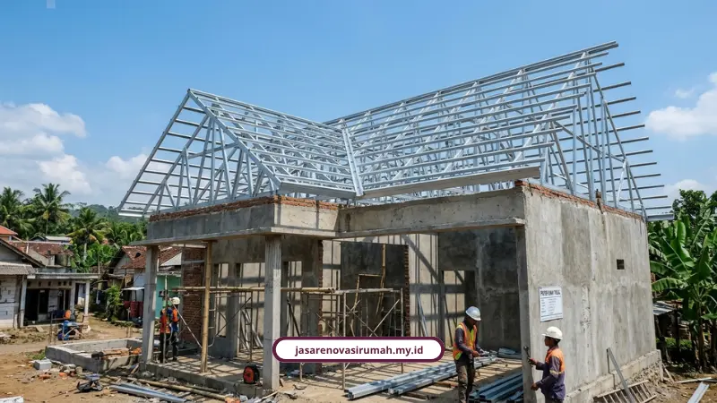

Setiap proyek garansi renovasi rumah yang kami kerjakan dilindungi jaminan struktur resmi selama 3 bulan sejak serah terima kunci, mencakup 5 risiko struktur utama. Ini berarti kalau ada masalah pasca-renovasi, Anda tidak perlu menanggung biaya perbaikan sendiri.
Banyak orang mikir garansi renovasi cuma janji manis di mulut tukang. Padahal garansi yang benar itu harus tertulis, jelas cakupannya, dan punya dasar hukum yang bisa dipegang kalau ada masalah di kemudian hari.
Ahmad Fauzi, project manager konstruksi, menjelaskan perbedaan mendasar yang sering disalahpahami orang:
"Retensi adalah uang penahanan sekitar 5 persen untuk cacat fisik awal, sementara garansi adalah janji tertulis perbaikan purna jual pasca-retensi. Garansi yang valid wajib memuat tiga hal secara tertulis, yaitu apa yang dijamin, berapa lama masa berlakunya, dan apa saja pengecualiannya."
Kenapa Garansi Renovasi Rumah Itu Penting?
Garansi renovasi rumah penting karena melindungi pemilik rumah dari cacat pengerjaan dan kebocoran struktur yang baru terlihat setelah beberapa waktu pemakaian.
Ketakutan paling umum warga Malang saat renovasi biasanya soal ini:
- Trauma kontraktor lepas tangan setelah dibayar lunas.
- Cemas biaya siluman muncul tanpa penjelasan RAB.
- Khawatir struktur atap dan waterproofing bocor saat musim hujan, mengingat kelembapan pegunungan Malang cukup tinggi.
Garansi resmi jadi jawaban atas semua kekhawatiran itu, karena ada kepastian tertulis soal siapa yang bertanggung jawab kalau ada masalah.
Apa Dasar Hukum Garansi Renovasi Rumah di Indonesia?
Dasar hukum garansi renovasi rumah di Indonesia diatur dalam UU Jasa Konstruksi dan peraturan turunannya soal masa pemeliharaan.
Berdasarkan Pasal 63 UU Nomor 2 Tahun 2017 tentang Jasa Konstruksi, penyedia jasa wajib mengganti atau memperbaiki kegagalan bangunan yang disebabkan kesalahan pelaksanaan. Klien punya hak hukum menuntut pemenuhan prestasi atau ganti rugi kalau pengerjaan tidak sesuai spesifikasi perjanjian.
Sementara soal masa retensi, Peraturan Menteri PUPR Nomor 14 Tahun 2020 dan Peraturan LKPP Nomor 9 Tahun 2018 mengatur masa pemeliharaan minimal 6 bulan untuk bangunan permanen, dan 3 bulan untuk renovasi atau pekerjaan semi-permanen, terhitung sejak serah terima pertama sampai serah terima akhir.
Garansi 3 bulan yang kami berikan mengacu pada standar minimal tersebut untuk pekerjaan renovasi.

Apa Saja yang Dilingkupi Garansi Struktur 3 Bulan Kami?
Garansi struktur 3 bulan kami fokus pada 5 risiko struktur utama yang paling sering muncul pasca-renovasi.
- Retak struktur dinding dan kolom: retakan diagonal akibat pergeseran beban atau penurunan pondasi.
- Pondasi tidak stabil: menjaga dari risiko lantai miring atau penurunan struktur setelah renovasi.
- Balok dan kolom di bawah standar: menjamin perkuatan struktur (jacketing) aman menahan beban baru.
- Struktur atap lapuk/lemah: menjamin ketahanan rangka atap baja ringan dari kebocoran saat cuaca ekstrem.
- Ketidaksiapan struktur lama: memastikan penambahan elemen modern seperti drop ceiling didukung struktur penopang yang kuat.
Kelima poin ini yang jadi patokan kami setiap kali menyusun kontrak SPK dengan klien, supaya jelas apa yang ditanggung dan apa yang tidak.
Kenapa RAB Transparan Berkaitan Erat dengan Garansi?
RAB transparan berkaitan erat dengan garansi karena spesifikasi material dan metode kerja yang tercatat di RAB itulah yang jadi acuan saat klaim garansi diajukan.
Tanpa RAB yang jelas, sulit membuktikan apakah kerusakan terjadi karena kesalahan pengerjaan atau karena material di luar spesifikasi awal. Makanya sistem borongan penuh (all-in) yang mengunci harga dalam kontrak SPK dan RAB resmi jadi kunci utama, karena membebaskan pemilik rumah dari risiko pembengkakan biaya sekaligus memperjelas cakupan garansi.
Sebagai gambaran anggaran, kisaran biaya renovasi rumah di Malang Raya ada di Rp1.200.000 sampai Rp4.500.000 per meter persegi tergantung skala pekerjaan, seperti yang sudah kami bahas detail di panduan menghitung RAB renovasi rumah.
Apa Kata Klien Soal Garansi yang Kami Berikan?
Klien kami menilai garansi resmi memberi rasa aman lebih, terutama soal kepastian waktu dan tanggung jawab pasca-pengerjaan.
Bapak Anton, klien kontraktor di Bekasi, menyampaikan pengalamannya:
"Pengerjaan tepat waktu sesuai kontrak dan ada garansi, jadi kami merasa aman menggunakan jasa ini."
Bapak Andi, klien renovasi rumah di Malang, juga punya kesan serupa:
"Proses renovasi rumah kami berjalan sangat rapi, komunikasi tim selalu jelas dan hasil akhirnya melebihi ekspektasi."
Kami sudah menangani lebih dari 150 proyek renovasi dan pembangunan dengan kepuasan klien 98 persen, didukung 25 lebih tenaga profesional dari arsitek sampai tukang berpengalaman.
Bagaimana Cara Klaim Garansi Renovasi ke Kami?
Klaim garansi bisa diajukan dengan menghubungi tim kami langsung dalam periode 3 bulan sejak serah terima kunci, disertai keterangan lokasi kerusakan.
- Hubungi kami via WhatsApp di 0889-8964-3555 dengan foto/keterangan kerusakan.
- Tim kami jadwalkan pengecekan lokasi.
- Perbaikan dilakukan sesuai cakupan garansi tanpa biaya tambahan.
Untuk detail cakupan layanan renovasi lainnya, silakan cek layanan kami secara lengkap.
Kesimpulan
Garansi struktur 3 bulan bukan sekadar embel-embel promosi, tapi komitmen tertulis yang punya dasar hukum jelas untuk melindungi Anda pasca-renovasi.
Dengan cakupan 5 risiko struktur utama dan RAB transparan sejak awal, Anda tidak perlu was-was soal biaya perbaikan tambahan di kemudian hari.
Hubungi kami di 0889-8964-3555 atau kunjungi kantor kami di Jl. Soekarno Hatta No. 45, Malang untuk konsultasi gratis sebelum mulai proyek renovasi Anda.
FAQ Seputar Garansi Renovasi Rumah

Naura Regyna Putri
Penulis Profesional & Praktisi Konstruksi
Naura Regyna Putri adalah seorang penulis profesional yang memiliki ketertarikan mendalam pada dunia arsitektur dan konstruksi. Dengan pengalaman bertahun-tahun mengamati tren renovasi rumah, ia aktif membagikan panduan praktis, tips RAB, dan wawasan seputar material bangunan untuk membantu pemilik rumah mewujudkan hunian impian mereka dengan anggaran yang efisien.